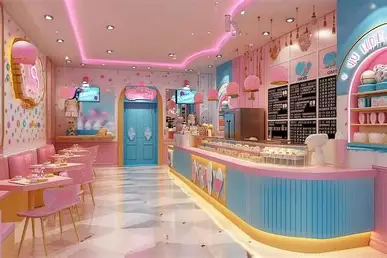

Historia de la Heladeria
Hace algunos años, en un pequeño barrio lleno de vida y risas, nació
la idea de crear un lugar donde cada persona pudiera encontrar un
momento de felicidad en algo tan simple como un helado.
la familia gustini apasionado por los sabores y por compartir
experiencias, soñaba con un espacio que no fuera solo una heladería,
sino un punto de encuentro.
Así nació Gustito: un rincón donde cada sabor cuenta una historia.
Desde las recetas clásicas que evocan la infancia, hasta las
combinaciones innovadoras que despiertan la curiosidad, Gustito se
convirtió en un símbolo de alegría cotidiana.
Su nombre refleja lo que ofrece: ese pequeño placer que transforma
un día común en un recuerdo especial.
Con el tiempo, Gustito se volvió parte de la comunidad. Familias,
amigos y parejas lo eligieron como lugar para celebrar, conversar o
simplemente disfrutar un momento de calma.
La filosofía siempre fue la misma: cada helado es preparado con
dedicación, buscando que cada cliente se lleve no solo un producto,
sino una experiencia.
Hoy, Gustito sigue creciendo, manteniendo viva la esencia de su
origen: ser más que una heladería,
ser un espacio donde los sabores se convierten en emociones y los
clientes en protagonistas de la historia.
